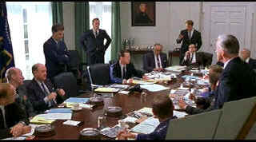

| Thirteen
Days (SE)/ B+, A- |
| New Line/2001/147/ANA 1.85 |
A sense of invincibility is inherent in the swagger of youth. In 1962,
as a nineteen-year-old, I was pretty much oblivious to the Cuban Missile Crisis. Little did I
realize how close the United States came to entering into a devastating nuclear war. Thirteen
Days is the story of that crisis told from the perspective of The White House. Perhaps the
election of youthful John F. Kennedy as President in 1960 emphasized that feeling of being
indestructible. If Eisenhower was a father figure, Kennedy was more like a big brother, infused
with youth and vitality.
When nuclear missiles are discovered by spy planes in Cuba, President Kennedy is
confronted with the reality that their presence in close proximity to United States targets poses
an unacceptable threat to our National security. How Kennedy and his team of advisors,
including brother Robert, Secretary of Defense McNamara, the Joint Chiefs of Staff, United Nations
Ambassador Adlai Stevenson and outside advisor Dean Acheson deal with the crisis is ring in which Thirteen
Days makes its excellent fight. It's not giving too much away by telling you we never did go to
war over the missiles.
Choosing Kennedy advisor and close friend Kenny O'Donnell as the eyes
through which the story is told adds a layer is an excellent dramatic choice. O'Donnell's concerns
reach outside The White House to his own family, and we can more easily identify with the less well
known O'Donnell. One false script decision gives O'Donnell a couple of chores too many,
but overall I had few qualms about script veracity and sagacity.
 |
| Laying down the ground rules.
©New Line |
Roger Donaldson has had an enigmatic directing career. Just
when you think he's about to break into a superstar suit, he revs up the wrong vehicle. Donaldson
broke into the art house scene with the excellent New Zealand drama Smash Palace and moved
on with panache to a big critically successful remake of Mutiny on the Bounty, The Bounty
starring Mel Gibson and Anthony Hopkins. A solid political drama followed, Marie, starring
Sissy Spacek, and then the excellent Kevin Costner vehicle No Way Out set in Washington's
corridors of power. But then there have been the critical clinkers like the lamentable Cocktail,
desperately loud Cadillac Man, and Species, a scifi flick that emphasized sex over
story. Donaldson's last effort, Dante's Peak, was overpowered by excess lava. Happily, the
director really hits the mark with Thirteen Days. Taking the historical chronology and
delivering a riveting and suspenseful film isn't as easy as it might seem. You might know the
results, but with intelligence and something akin to sleight of hand, Donaldson and his team have a
winning fight plan. Rhythm is crucial to making a successful film based on historical events which
unfold like those of Thirteen Days. Donaldson is like a fighter who comes into the ring with
all the right combinations. He bobs and weaves, uses the ring like a savvy pro and keep the big
right hand punch as a threat fromt he very first round.
Blending black and white cinematography for transitions is not a new
device, but it is elegantly effective in setting the Thirteen Days scene and period.
Cinematography and production design are excellent. This is a first class production all the way.
The Trevor Jones score makes sure the tension is effectively maximized.
Kevin Costner nails the Boston accent perfectly as Kenny O'Donnell. It's a
convincing performance and one that will probably be taken for granted like many of the actors
excellent effortless cinema turns. Bruce Greenwood is okay as JFK, but he seems in and out of
accent, playing Kennedy as a hybrid between Boston and Brooklyn. I wonder how the casting process
went? Greenwood's resemblance to a young Cliff Robertson is uncanny. Robertson played John F.
Kennedy in PT 109, the story of Kennedy's war service. Robertson never did remind of Kennedy
in the least bit and neither does Greenwood. Steven Culp, on the other hand, looks and feels like
Robert Kennedy. Together with Costner, Culp's convincing work helps bolster any doubts about
Greenwood. The overall fabric of the film is enriched by many fine supporting performances
including Len Cariou as for Secretary of State Dean Acheson and Dylan Baker as Secretary of Defense
Robert McNamara.
As the first title in New Line's Infinifilm*series
of special editions, Thirteen Days makes an auspicious choice for launching the project. It
is packed with information about the film and era. An annotated historical commentary includes
speeches from the likes of Kennedy, Khrushchev, and press secretary Pierre Salinger. The heart of
the special edition is the commentary from the filmmakers led by director Roger Donaldson, producer
Armyan Bernstein, writer David Self, former New Line head of production Michael De Luca and
producer/star Kevin Costner. The importance of casting is noted a number of times, and not
surprisingly, Donaldson notes details of production design that capture the reality of the White
House in 1962. It's a benefit having various principals sharing their ideas in interaction on a
commentary. Conversation ranges from historical perspective to comments of acting challenges at
different times. Or you might learn that a White House switchboard scene was added after preview
input.
There's more: a 48 minute documentary, Roots of the Cuban Missile
Crisis adds a clear historical perspective. There are nine deleted or extended scenes available
with or without commentary. a visual effects demonstration utilizing the angle feature of DVD
presents the compositing of a sequence. A making of eleven minute short features filmmaker
observations. You can watch the film with annotation bars at the beginning of every chapter giving
you a couple of second opportunity to access additional illumination about the film or history.
There's a nifty text feature that provides information about historical characters over the
image.
There are lots of visual textures in Thirteen Days resulting in
images of varying brilliance. Separating enhanced archival footage and intentionally degraded shots
keeps a viewer on his toes. I suppose the image could have been rendered with more consistent
sharpness, however, there's a somewhat newsreel quality to the film that may explain why it
sometimes veers from perfect clarity. Overall, Thirteen Days is a very sharp presentation
with no ugly edge enhancement to muddy detail. Colors are beautifully saturated with no edge
bleeding. The black and white transitional scenes are simply lovely with deep blacks and perfect
gray scale balance. All the black and white sequences are sharp enough to give you a close shave.
The Dolby Digital 5:1 Surround Sound creates a consistently sense of spatial immediacy without
being overly aggressive.
*New Line's Infinifilm branded DVDs are designed to make
for easy navigation on special edition voyages. For more detailed information, click the link on Infinifilm.
|
|
|
|

Selections from the Feature Archive
include articles on Akira Kurosawa, Frank
Darabont, Blonde Bimbos, Hollywood Street Gangs, or Vietnam: The
Hollywood Pariah, and many more....

What actor would you vote whose screen persona best exemplified the fabric of the president of the
United States? Check act Acting Presidential for a look at the many actors
who have coveted The Oval Office.
Capturing Kennedy

Steven Culp extracts the
essence of Robert F. Kennedy in Roger Donaldson's outstanding feature Thirteen Days. Culp recently shared
insights on the performance and his career with Films on Disc. Click the image for more.
 
The American Widescreen Museum, is the ultimate resource for widescreen movie information, Martin
Hart's reliable site is a great tool for movie buffs.

Comprehensive DVD review database. Easy to use
interface with specific region searches.

Images is a non-commercial Web site created for everyone who enjoys movies and popular culture.
Images is published quarterly; however, new reviews will appear each week, so check back often.

ISF Monitor Calibrations in the
Tristate New York area. Lots of hardware info and frequent hardware peaks from video expert Kevin
Miller.
 Jim
Doolittle Jim
Doolittle
ISF Instructor. Premier calibrator and expert front projection system setup technician in the
Boston area.

Now a major independent DVD distributor, Image has parlayed its laser disc business
to success. Great DVD release calendar info.

The National Film Preservation Foundation (NFPF) is the nonprofit organization created by the U.S. Congress to save
America's film heritage.
 Have you visited Home Theater
Talk lately? One of the friendliest places on the Net for Home Theater and DVD discussion, you
can get help for installation problems or simply share your opinions with other Vidiots. Have you visited Home Theater
Talk lately? One of the friendliest places on the Net for Home Theater and DVD discussion, you
can get help for installation problems or simply share your opinions with other Vidiots.

The
Movie Poster Archive includes extensive poster images from the films of stars like Susan Hayward,
Kirk Douglas, Katharine Hepburn and many more. Our featured star is Gregory Peck


Apocalypse Now is Coppola's distorted vision of war now on DVD in
gorgeous anamorphic images.

DVD packaging can be the bane of the collector. Click on Rants and
Raves for more.
The DVD Package
Mother Night/A-/A-
The eccentric style of Nick Nolte is perfect for the angst ridden
Howard W. Campbell, Jr., a hero or a villain.

Click on the DVD MIA symbol for
profiles of DVDs missing in action.
Add films to the DVD MIA Master List by filling out
a simple form. Click Here
|